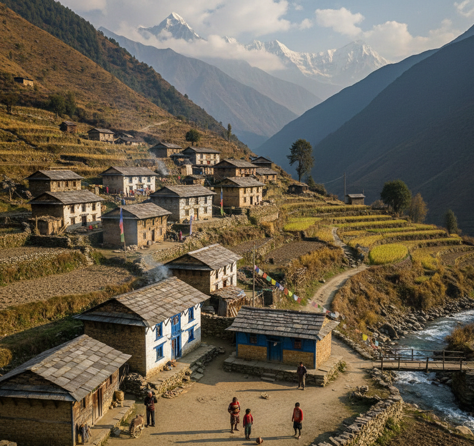

Nepali Ghar was born from a simple dream to share the true taste of Nepal and the warmth of a Nepali home with the world.Our journey began in a small family kitchen in Nepal, where food was more than just something to eat. It was how we showed love. Every morning started with the sound of spices being ground, lentils simmering on the stove, and fresh vegetables being prepared with care. Family members gathered around the hearth, sharing stories while cooking meals that brought everyone together.When our family moved far from Nepal, we carried those memories with us the aroma of homemade dal bhat, the joy of making momos together, and the feeling of sitting on the floor, eating and laughing as one family. We realized that what we missed most was not just the food, but the feeling of home.That is why we named our restaurant Nepali Ghar which means “Nepali Home.” We wanted to create a place where anyone, no matter where they are from, can experience the warmth, hospitality, and authentic flavors of a Nepali household.Every dish we serve is prepared using traditional recipes passed down through generations. We cook with patience, fresh ingredients, and love just as it is done in Nepal. From our handmade momos to our comforting dal bhat sets, each meal is a reminder of our roots.At Nepali Ghar, you are not just a guest you are family. We invite you to sit, eat, and feel at home with us.
